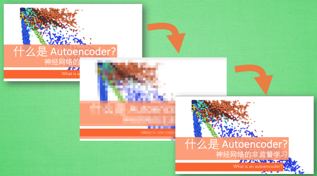
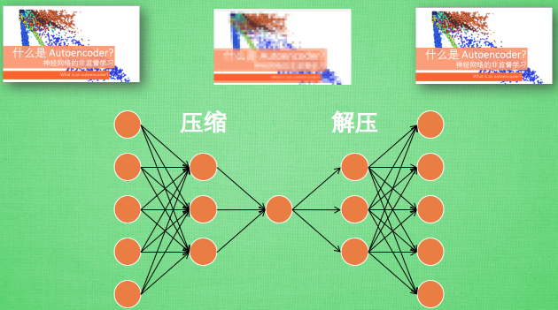
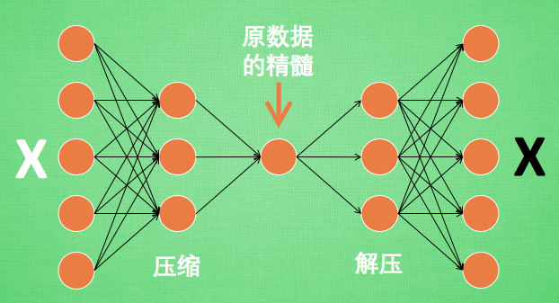
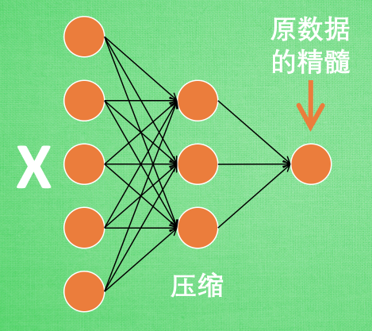
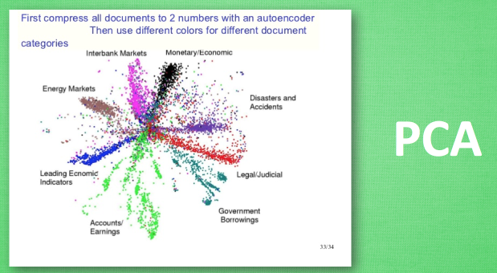

什么是自编码 (Autoencoder)
作者: 莫烦 编辑: 莫烦
学习资料:
今天我们会来聊聊用神经网络如何进行非监督形式的学习. 也就是 autoencoder, 自编码.
注: 本文不会涉及数学推导. 大家可以在很多其他地方找到优秀的数学推导文章.
自编码 autoencoder 是一种什么码呢. 他是不是 条形码? 二维码? 打码? 其中的一种呢? NONONONO. 和他们统统没有关系. 自编码是一种神经网络的形式.如果你一定要把他们扯上关系, 我想也只能这样解释啦.
压缩与解压

有一个神经网络, 它在做的事情是 接收一张图片, 然后 给它打码, 最后 再从打码后的图片中还原. 太抽象啦? 行, 我们再具体点.

假设刚刚那个神经网络是这样, 对应上刚刚的图片, 可以看出图片其实是经过了压缩,再解压的这一道工序. 当压缩的时候, 原有的图片质量被缩减, 解压时用信息量小却包含了所有关键信息的文件恢复出原本的图片. 为什么要这样做呢?

原来有时神经网络要接受大量的输入信息, 比如输入信息是高清图片时, 输入信息量可能达到上千万, 让神经网络直接从上千万个信息源中学习是一件很吃力的工作. 所以, 何不压缩一下, 提取出原图片中的最具代表性的信息, 缩减输入信息量, 再把缩减过后的信息放进神经网络学习. 这样学习起来就简单轻松了. 所以, 自编码就能在这时发挥作用. 通过将原数据白色的X 压缩, 解压 成黑色的X, 然后通过对比黑白 X ,求出预测误差, 进行反向传递, 逐步提升自编码的准确性. 训练好的自编码中间这一部分就是能总结原数据的精髓. 可以看出, 从头到尾, 我们只用到了输入数据 X, 并没有用到 X 对应的数据标签, 所以也可以说自编码是一种非监督学习. 到了真正使用自编码的时候. 通常只会用到自编码前半部分.
编码器 Encoder

这 部分也叫作 encoder 编码器. 编码器能得到原数据的精髓, 然后我们只需要再创建一个小的神经网络学习这个精髓的数据,不仅减少了神经网络的负担, 而且同样能达到很好的效果.

这是一个通过自编码整理出来的数据, 他能从原数据中总结出每种类型数据的特征, 如果把这些特征类型都放在一张二维的图片上, 每种类型都已经被很好的用原数据的精髓区分开来. 如果你了解 PCA 主成分分析, 再提取主要特征时, 自编码和它一样,甚至超越了 PCA. 换句话说, 自编码 可以像 PCA 一样 给特征属性降维.
如果你觉得这篇文章或视频对你的学习很有帮助, 请你也分享它, 让它能再次帮助到更多的需要学习的人. 莫烦没有正式的经济来源, 如果你也想支持 莫烦Python 并看到更好的教学内容, 赞助他一点点, 作为鼓励他继续开源的动力.